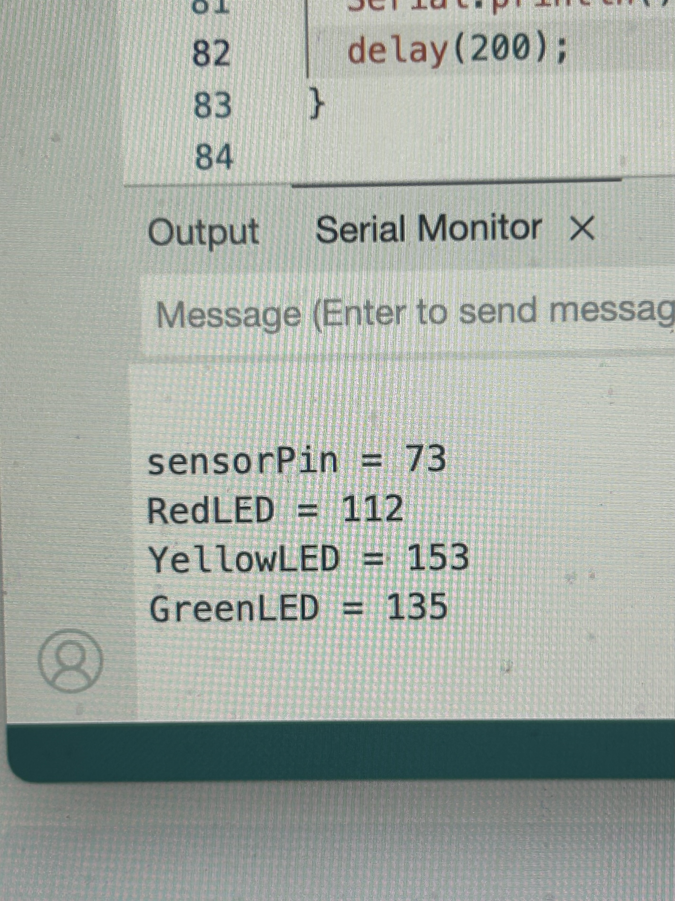
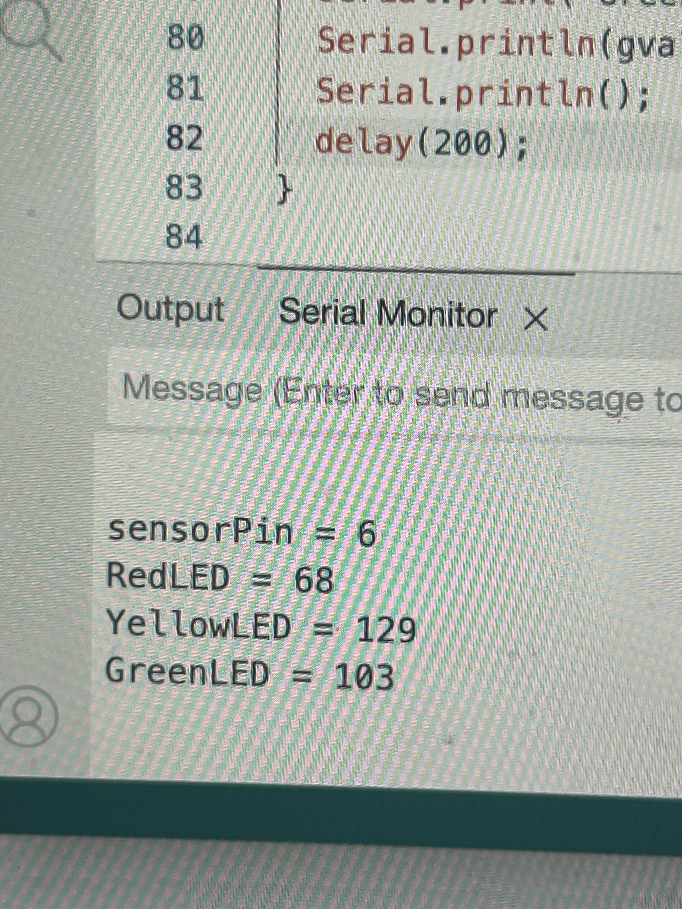
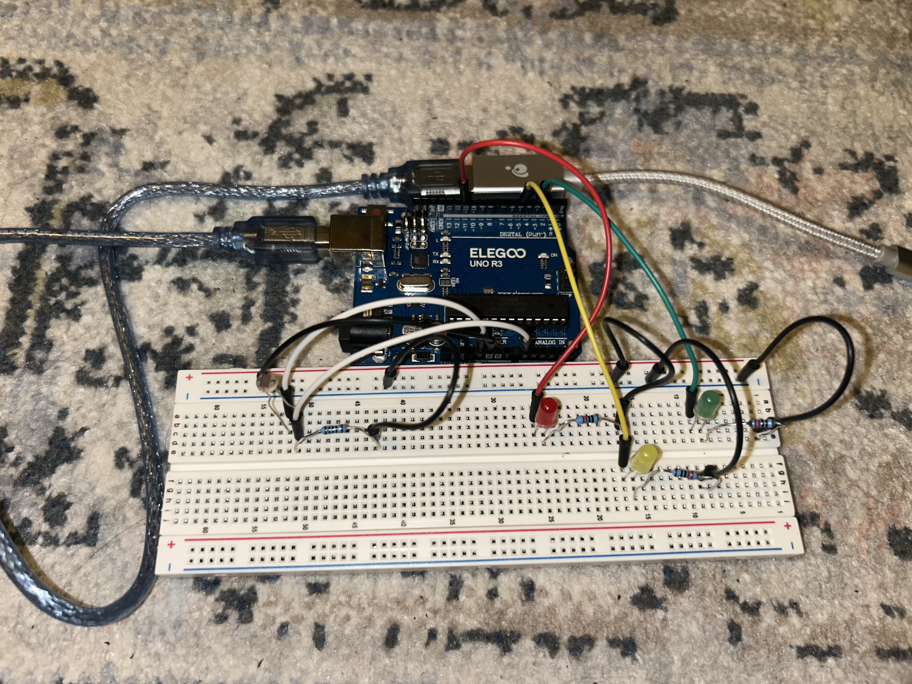
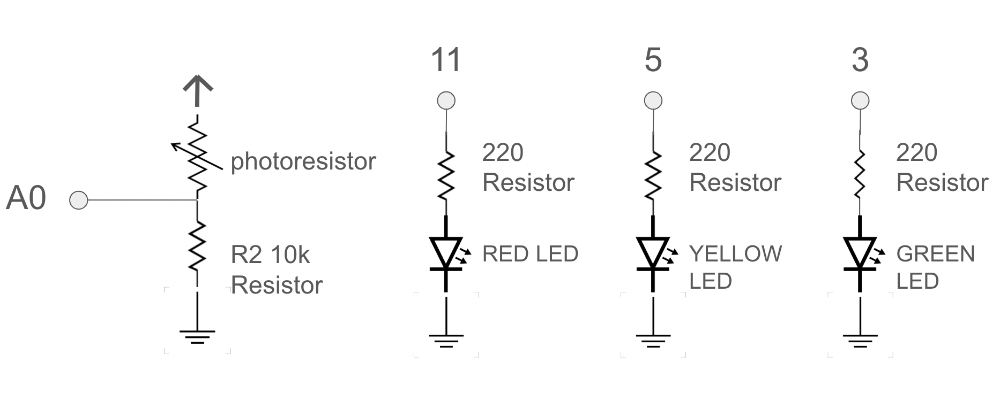
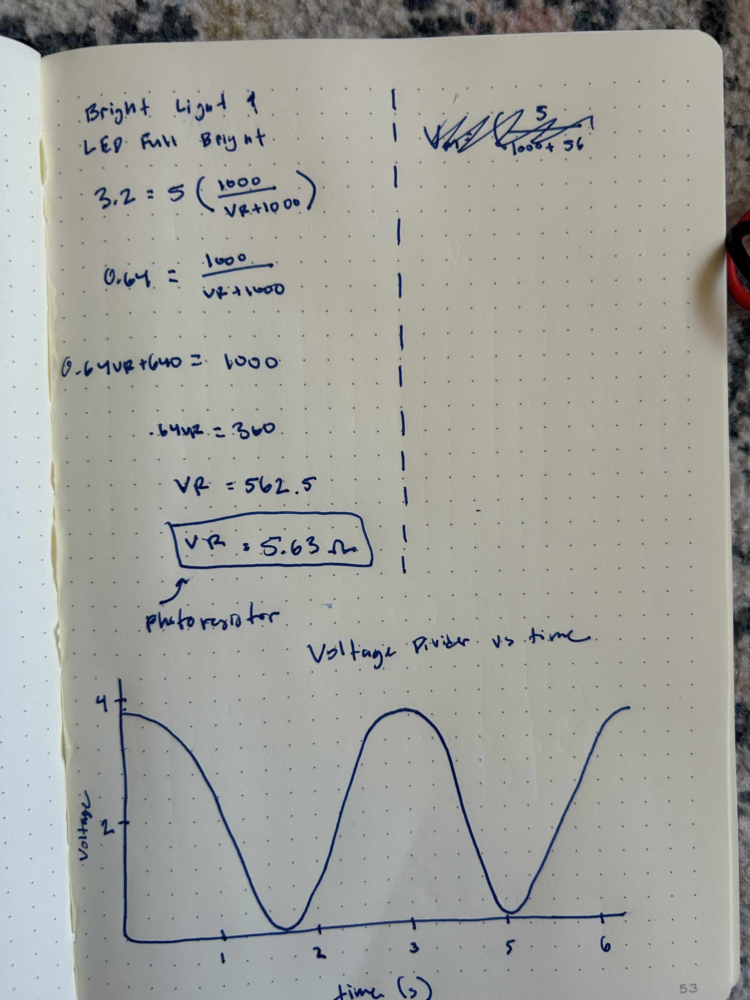

Circuit Gif

Serial Output
When the photoresistor is calibrated to the highest light (ie. no hand covering) the serial output prints the baud for the sensor and 3 respective LEDs.
When the photoresistor is calibrated to the lowest light (ie. my hand is covering the sensor) the serial output prints the baud for the photoresistor and 3 respective LEDs per second. As you can see the sensor reads a significantly lower number when it is covered than when it is not.
Resistor Calculation
To calculate the resistor value for each LED we need to know the voltage drop for red, green and yellow LEDs which are all 1.8V. We also know that each LED should run at a 20mA current and the Arduino gives 5 volts. I used 220Ω resistors for each LED because it is the closest value greater than 160Ω. Each LED gets thier own digital pin and resistor.
V = I x R // Ohm's Law
V = V - Vf = 5 - 1.8 = 3.2 V
I = 20mA = 0.02A
R = V / I = 3.2V / 0.02A = 160Ω
I used a 10kΩ resistor in seriese with my photoresistor in order to use less mA and current to conserve power in our circuit. With a 10k resistor we would have 5mA current which is a sufficient in the dark and in the brightest light.
V = I x R // Ohm's Law
5 = I x 1000
I = .005A = 5mA
// Chose 10k resistors for the photoresistor
Circuit Image
Schematic
Each LED is gets it's own resistor and digital pin because there are in parallel with one another. My voltage divider photoresistor is in series with a 10k resistor which is connected to the ground, an analog in (A0) and 5V power.
Arduino Code
In the first 5 seconds of running the code I covered and uncovered the photoresistor with my hand to calibrate the max bright and min low readings. The program uses these calibration values to contrain the LEDs to reach max and min brightness which is communicated through the photoresistor (ie. sensorMin and sensorMax are the lower and upper bounds of the calibrated sensor range). In addition, this program executes serial outputs for all LEDs and the photoresistor sensor which makes the LEDs fade off when the photoresistor is covered
Part of this code was created using the example code Calibration from Arduino.
// Initializing LEDs and photoresistor to input ports
const int sensorPin = A0; // pin that the photoresistor sensor is attached to
const int red = 11; // pin that the RED LED is attached to
const int yellow = 5; // pin that the YELLOW LED is attached to
const int green = 3; // pin that the GREEN LED is attached to
// variables for calibration
int sensorValue = 0; // the sensor value
int sensorMin = 1023; // minimum sensor value
int sensorMax = 0; // maximum sensor value
// values for all LEDs and photoresistor to use in serial printing
int pin = A0;
int r = red;
int y = yellow;
int g = green;
int pinval = 0;
int rval = 0;
int yval = 0;
int gval = 0;
void setup() {
// turn on LED to signal the start of the calibration period
pinMode(13, OUTPUT);
digitalWrite(13, HIGH);
// calibrate during the first five seconds
while (millis() < 5000) {
sensorValue = analogRead(sensorPin);
// record the maximum sensor value
if (sensorValue > sensorMax) {
sensorMax = sensorValue;
}
// record the minimum sensor value
if (sensorValue < sensorMin) {
sensorMin = sensorValue;
}
}
// signal the end of the calibration period
digitalWrite(13, LOW);
// initialize serial monitor
Serial.begin(9600);
}
void loop() {
// read the sensor
sensorValue = analogRead(sensorPin);
// in case the sensor value is outside the range seen during calibration
sensorValue = constrain(sensorValue, sensorMin, sensorMax);
// apply the calibration to the sensor reading
sensorValue = map(sensorValue, sensorMin, sensorMax, 0, 255);
// fade the LEDs using the calibrated value
analogWrite(red, sensorValue);
analogWrite(yellow, sensorValue);
analogWrite(green, sensorValue);
// Read the voltage of pins and thermistor
pinval = analogRead(pin);
rval = analogRead(r);
yval = analogRead(y);
gval = analogRead(g);
// Print the values for all LEDs and photoresistor based on the physical world
Serial.print("sensorPin = ");
Serial.println(pinval);
Serial.print("RedLED = ");
Serial.println(rval);
Serial.print("YellowLED = ");
Serial.println(yval);
Serial.print("GreenLED = ");
Serial.println(gval);
Serial.println();
delay(200);
}
Additional Questions
Question 1
My varibale resistor (photoresistor) and my 10k resistor are in series making a voltage divider which means Vout = Vin * R2/(R1+R2). This means that the variable resistor's position as R1 or R2 would effect the total voltage output in my circut. The variable resistor being the photoresistor is R1 which changes in resistance based on the light input. In this sequence:
Vout = Vin * R2/(R1+R2)
// Variable resistor as R1
Vout = 5 * (10k/VR+10k)
// Variable resistor as R2
Vout = 5 * (VR/10k+VR)
If the photoresistor (VR) was R2 instead of R1, then when the variable resistor is at low resistance (in bright light) than the Vout would be very small (because it is the numeriator) which would not provide enough voltage output to power the circuit. Thus we need to have the 10K resistor to be R2 (connected to ground) to gain the most Vout and variable resistor as R1.
Question 2
V-measure of Voltage Divider Over Time
I measured the voltage of my photoresistor using the multimeter, to find that when the voltage divider is uncovered there is a Vmeasure of around 3.8V and when it's covered the Vmeasure decreases to 0V. This makes sense because the photoresistor's resistance decreases as the light level increases, causing the voltage divider to output a higher voltage. (calibration is not included in gif). I also calculated the resistance as shown in the image.
Question 3
8-bit values range from (0 to 255) for PWM and 10-bit values range from (0 to 1023) for analog inputs makes my map() before calibration map(A0, 0, 1023, 0, 255). In my specific code we constrained the lower and upper bound of the value's current range to be the sensorMin and sensorMax derived in the calibration period so mine looks like map(sensorValue, sensorMin, sensorMax, 0, 255). If we were to change the AnalogWrite to a 10-bit PWM and the analogRead to a 16-bit analog-to-digital converter instead, then the map(value, fromLow, fromHigh,toLow,toHigh) would also have to change. It's measured that a 16-bit converter can distinguish between 0-65536 values, which would make map(sensorValue, 0, 65535, 0, 1023). This would re-map the sensor to control LED brightness because the output range becomes (0-1023) and the input range becomes (0 to 65535). This results in LEDs becoming more responsive to changes in light intensity from the photoresistor.